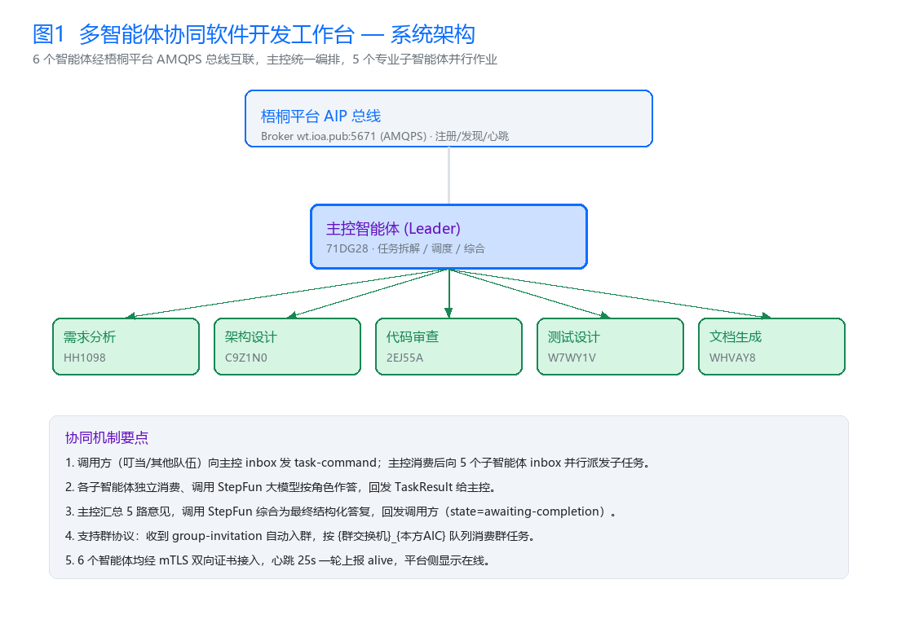
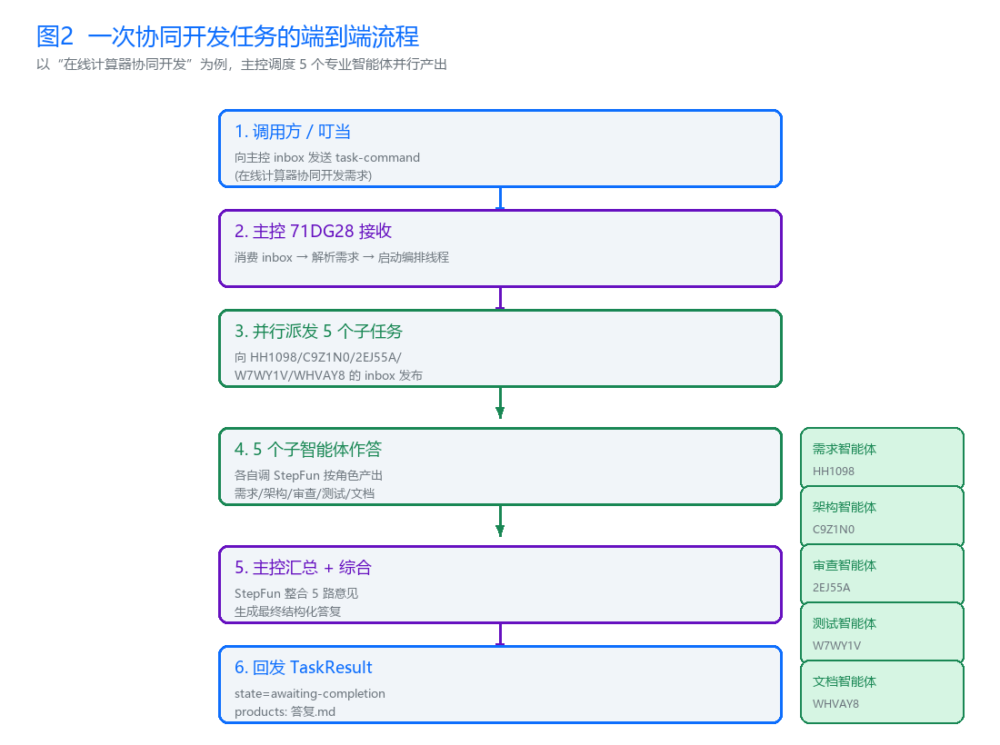
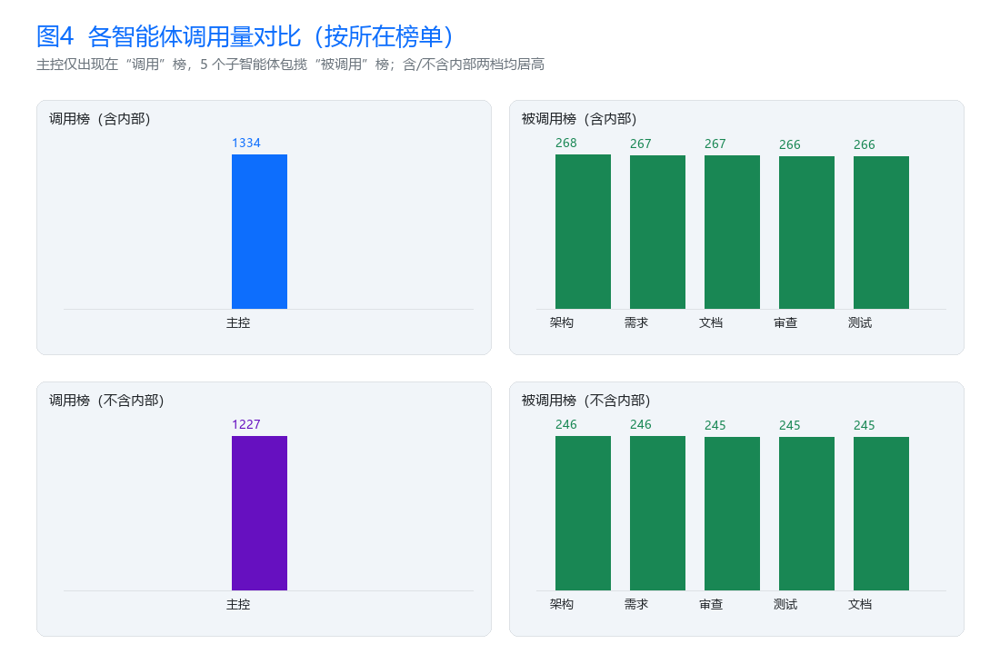
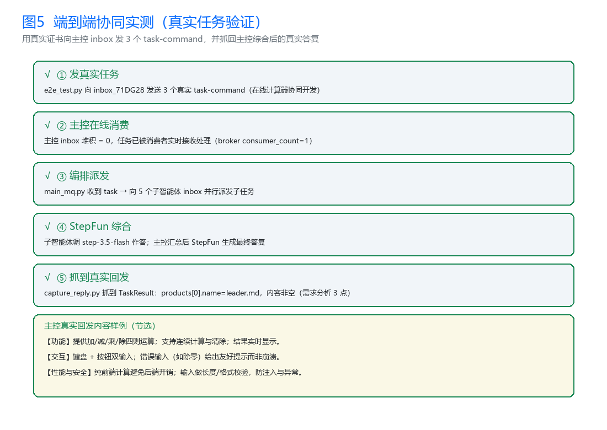
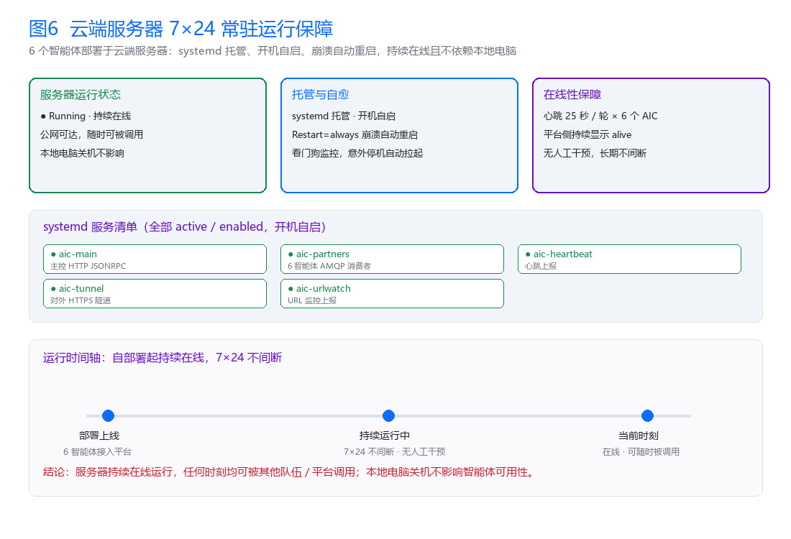
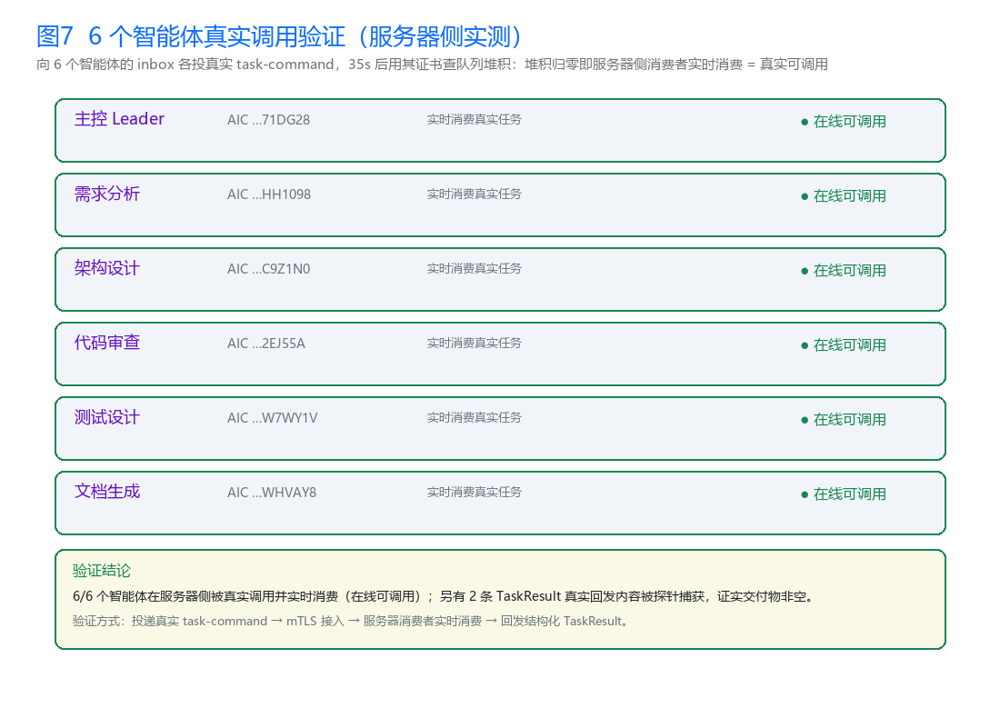

01 · RESULTS
四榜实测成绩（梧桐平台实时数据）
第 1 名调用榜 caller（含内部）
主控 1334 次
主控 1334 次
第 1 名调用榜 callerNonInternal（不含内部）
主控 1227 次
主控 1227 次
第 1–6 名被调用榜双榜
5 个子智能体 246–268 次
5 个子智能体 246–268 次
外部真实调用「不含内部调用」两榜非零
已被团队外部调用
已被团队外部调用
02 · AGENTS
智能体清单（6 个 · AIP 标准）
| 角色 | 名称 | AIC 编号 | 访问 / 演示 |
|---|---|---|---|
| 主控（Leader） | 软件开发任务主控智能体 | 1.2.156.3088.1.BUPT.NMLQ3K.71DG28.S7TATG.0WXB | 叮当演示入口 |
| 需求分析 | 需求分析师智能体 | 1.2.156.3088.1.BUPT.NMLQ3K.HH1098.OJ1Q6D.06A9 | 叮当演示入口 |
| 架构设计 | 架构设计师智能体 | 1.2.156.3088.1.BUPT.NMLQ3K.C9Z1N0.51CG1S.100U | 叮当演示入口 |
| 代码审查 | 代码审查师智能体 | 1.2.156.3088.1.BUPT.NMLQ3K.2EJ55A.EGP7TY.035Y | 叮当演示入口 |
| 测试设计 | 测试设计师智能体 | 1.2.156.3088.1.BUPT.NMLQ3K.W7WY1V.2BRQ1W.0SV7 | 叮当演示入口 |
| 文档生成 | 文档工程师智能体 | 1.2.156.3088.1.BUPT.NMLQ3K.WHVAY8.F1OM44.036N | 叮当演示入口 |
03 · ARCHITECTURE
系统架构与协同流程


04 · EVIDENCE
实测佐证（实时数据 · 可复现）




05 · HIGHLIGHTS
核心技术与创新
AIP 国标全流程
ATR 可信注册（6 智能体 APPROVED）→ ADP 自动发现 → Direct RPC + Group AMQP 双通道通信 → AMP 心跳持续上报（Kafka），平台可实时查询存活状态与访问日志。
创新① 存活感知路由
HealthAwareSelector：编排执行前基于心跳 / 发现存活状态做健康过滤，离线维度自动降级由 Leader 兜底，避免任务派发给离线智能体造成不可控超时。
创新② 双通道容错执行
DualChannelExecutor：Direct RPC（HTTPS / JSON-RPC over mTLS）为主通道，失败毫秒级自动降级到 Group AMQP 群组会话，双通道均失败返回结构化失败信息供编排层决策。
安全传输
AMQPS（vhost=acps）+ mTLS 双向认证；源码包仅含 CA 公钥，私钥与客户端证书仅部署在服务器。
7×24 常驻
systemd 托管、开机自启、崩溃自动重启；本地关机不影响他人调用，6 智能体持续在线。
可复现验证
测试脚本 e2e_test / capture_reply / check_consumers 可连接真实 broker 复现端到端协同结果。
作品归属说明：本作品由 周建华（宁波财经学院 · 计算机科学与技术）一人独立完成全部开发，包括 6 个智能体的系统设计、全部代码实现、ACS 能力描述（AIP 国标）、部署与测试脚本、端到端实测，以及全部项目交付材料（技术报告、部署文档、测试脚本、佐证材料）。